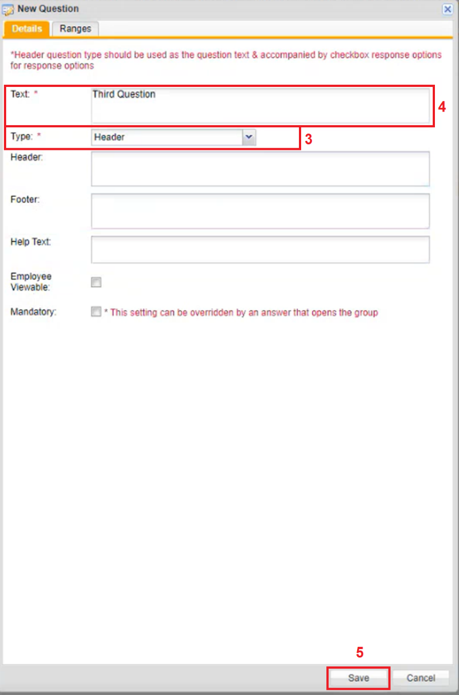
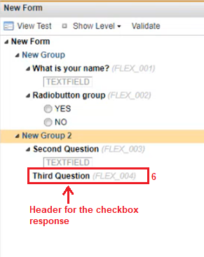
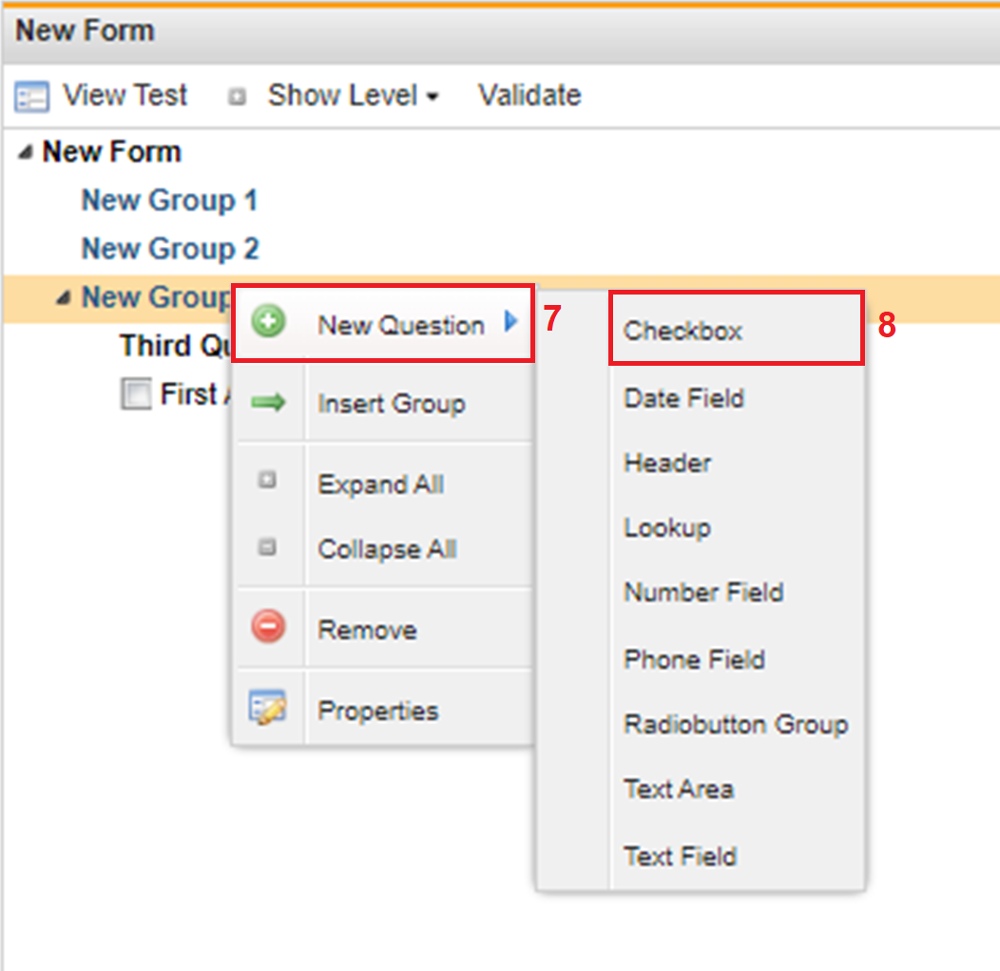
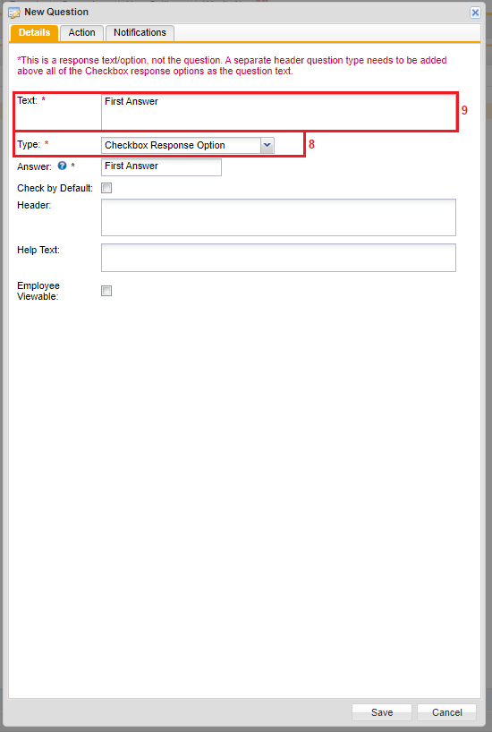
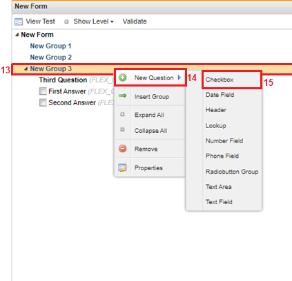
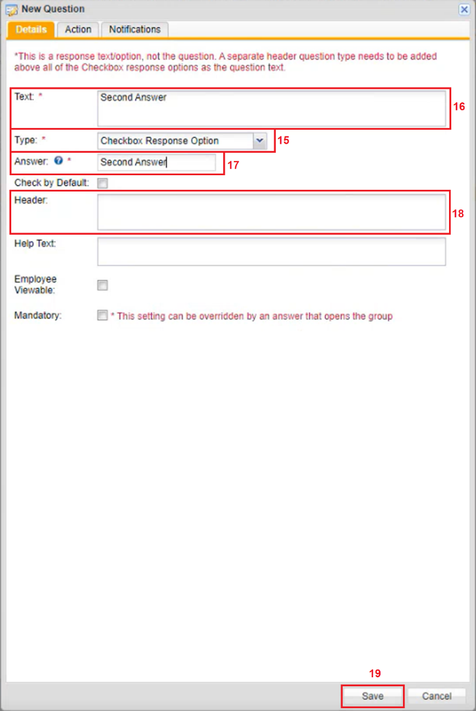
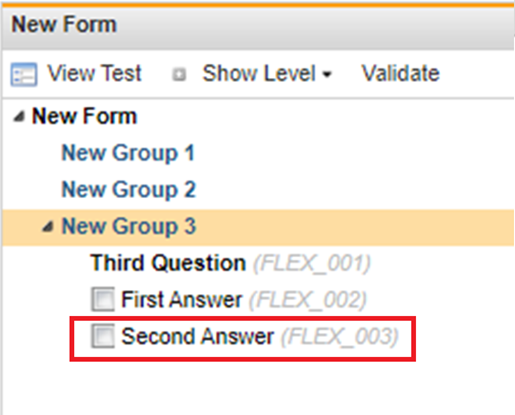

Right click the Group created under the charting form. A Menu appears.
Click New Question. Another menu to the left appears.
Click Header. The New Question window appears. The Type field is automatically filled in as Header.

Click the Text textbox and type in a question.
Click Save. The header for the checkbox response has been created.

Right click the Group where the Header for the checkbox was created in.

Click New Question. Another menu to the left appears.
Click Checkbox. The New Question window appears.

The Type field is automatically filled in as Checkbox. Instructions at the top of the window are provided as a guideline that the header created before a checkbox for a checkbox question.
Click the Text textbox and type in an answer.
In the Header textbox, type in instructions that you want to show prior to a question.
In the Footer textbox, type in what you want to show after a question.
Click Save.

To add another checkbox to the header, right click the Group where the Header for the checkbox was created in.
Click New Question. Another menu to the left appears.
Click Checkbox. The New Question window appears. The Type field is automatically filled in as Checkbox. Instructions at the top are provided as a guideline for having a header created before a checkbox for a checkbox question.

Click the Text textbox and type in an answer. The Answer dropdown text box should have the same answer as the answer inputted in the Text: textbox.
In the Header textbox, type in instructions that you want to show prior to a question.
Click Save. The second answer is added.

You can repeat the process to add more responses to the question.